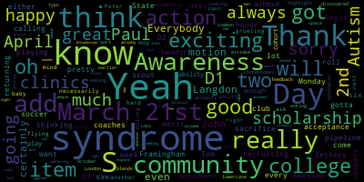

[Evangelista]: Marisa's on a call.
[Ruseau]: Oh, well, we can wait a minute. What should be done soon? Do you know? I mean, she's playing.
[Evangelista]: I don't know.
[Ruseau]: Not sure. I sent her the document yesterday, so I don't imagine that'd be that much to really talk about today. Hopefully. Good, how are you? You didn't put a tie on for us, I hope. Because I didn't even get my suit jacket out.
[nnsRDJfWfaQ_SPEAKER_08]: Hello Melanie, how are you?
[McLaughlin]: I'm good, I was just thinking I have an action item or two to get you and I was I saw you and I'm like oh I gotta get Tom these action items.
[nnsRDJfWfaQ_SPEAKER_08]: Okay I'm here, we'll stay in touch so whenever you get the chance.
[McLaughlin]: Yeah I will, thank you.
[nnsRDJfWfaQ_SPEAKER_08]: How's your, let's be some excitement soon about the return for your son and
[McLaughlin]: Very exciting. He's returning next Monday, but also we just got two acceptance letters to college, a merit scholarship, and an honor roll. So we're happy campers this week.
[nnsRDJfWfaQ_SPEAKER_08]: Which colleges?
[McLaughlin]: Regis and Framingham State, but they're all, he's playing, you know, so they're recruiting him for soccer. And so he's got six more in the pipeline that are calling pretty much every day the coaches are. So we're, we're all about those scholarships.
[nnsRDJfWfaQ_SPEAKER_08]: Good for him.
[McLaughlin]: Awesome. Exciting.
[nnsRDJfWfaQ_SPEAKER_08]: So he was getting recruited without his senior season really under his belt too. So he must've had a decent, track record from his junior year or club or things like that, beyond that.
[McLaughlin]: Yeah, he does club and he does clinics. They come out to the clinics and scout them a lot. So he's been doing that. And I'm really happy that he's going either D2 or D3. I didn't want him to do D1. It's just too much of a sacrifice. And college is an adjustment enough. So this way we get the benefit of a cohort and the ability to play without necessarily the grueling rigor of a D1. It's good, but it's another baby flying the nest, so always hard.
[nnsRDJfWfaQ_SPEAKER_08]: Congratulations.
[McLaughlin]: Thanks.
[Ruseau]: That is exciting. All right. I guess we should get started, just because I believe there's another METPR community media access that starts right after our meeting, so we want to make sure to be done on time. So I guess I should move the agenda. Sorry.
[nnsRDJfWfaQ_SPEAKER_08]: All right, so it is 4.03.
[Ruseau]: I'm going to call to order the Rules, Policy and Equity Subcommittee meeting for today, which is December 9th, 2020. Please be advised that on Wednesday, November 9th, from 4 p.m. to 5 p.m., there will be a rules policy and equity subcommittee meeting held for remote participation via Zoom. Pursuant to Governor Baker's March 12th 2020 order suspending certain provisions of the open meeting law and the Governor's March 15th order imposing strict limitations on the number of people that may gather in one place, this meeting of the Medford School Committee will be conducted via remote participation to the greatest extent possible. specific information, the general guidelines for remote participation by members of the public and or parties with a right and or requirement to attend this meeting can be found on the City of Medford website. For this meeting, members of the public who wish to listen or watch the meeting may do so by accessing the meeting link contained herein. No in-person attendance of members of the public will be permitted, but every effort will be made to ensure that the public can adequately access the proceedings in real time via technological means. In the event that we are unable to do so, despite best efforts, we will post on the City of Medford or Medford Community Media website an audio or video recording, transcript or other comprehensive record of proceedings as soon as possible after the meeting. The meeting can be viewed through Medford Community Media on channel, contact channel 22 and Verizon Channel 43 at 4 p.m. I'm not actually sure if those things are true, those last two bits. Since the meeting will be held remotely, participants can log or call in by using the following link or call-in number to join via Zoom, https://zoom.us.j.91471710270, or you may call Let's see, 301-715-8592. The meeting ID is 914-717-1024. Additionally, your comments or questions may be submitted during the meeting by emailing PRUSEAU at medford.k12.ma.us. Those submitting must include the following information, your first and last name, your Medford Street address, your question or comment. The agenda for tonight is one item. Our meeting objective is to continue to work on the school calendar 2021-2022 with specific attention paid to observations of holidays. I guess I will take the attendance. Member Graham. Present. Member McLaughlin. Yeah. and a member or so present, three present. We have quorum. So I did send out a link to, I took the existing policy and I wordsmithed it into a more modern format. I suspect the old one was not, Google Docs probably didn't exist when it was written. And I'm gonna just share it since not everybody necessarily has that. If that sounds okay with the members.
[McLaughlin]: Yeah, Peter, can I ask if you wouldn't mind muting?
[Evangelista]: Thank you.
[Ruseau]: share screen. Is this too big on everybody's screen? Or does zoom make magic? see it okay good so um this just follows this is the uh proposed new policy um it is we have an existing policy um which i will include in our packets um which is the icica policy um I actually forget how they give IDs. So that is the existing policy. This is an update using the format that we have started using the last couple of years. The name of the policy is the school year, school calendar policy. I didn't actually make that up. So the purpose aims to provide as much planning time for our students, families, and staff, and to ensure compliance with legally mandated structured learning time. This section here, unless anybody wants me to, it is pretty much the same text. It is the same text as the old policy, except for the inclusion of that. We will do it in November, which we actually previously approved at the school committee meeting, if memory serves me. We just made that, somebody made that motion or I made that motion and we approved it. It started in November, but it's actually part of a specific policy. And that's this language here. I actually don't necessarily agree with it, but it comes from the state. So it doesn't matter what I think. It's pretty, the biggest thing I disagree with is that recess does not count as time and learning from a social emotional perspective. That's pretty hard to stomach, So the big addition here is the observance list. And after our last meeting, we did have some conversation around naming of things. And I think that's very difficult. And there's no perfect words. So right now, it's called the observance list. It identifies important dates as variable or static, meaning they have the same date every year or they vary. have to be looked up. Static observances occur on the same day each year. Variable observances occur on dates which vary from year to year and must be looked up each year prior to the publication of the observance list and creation of the school calendar. Further observances are optionally categorized as no school, excused absence, or blocked. Blocked observances are dates when exams cannot be scheduled, major projects cannot be due or assigned, and events associated with Medford Public Schools should not be scheduled when possible. I did want to briefly mention this when possible because we had I felt like after the last meeting, we were pretty serious that blocked meant blocked. One of the challenges I realized is that there are many sports, for instance, that might have a Friday night sports event. And if an observance that we consider blocked is a variable date observance, it may end up being on a Friday. And we can't say a football team isn't going to show up to a game. because the way those are scheduled, they're scheduled, in my understanding, in three-year blocks, or out for at least a year, I think three years. So I added that language. I wonder if anybody has any comments on that.
[Graham]: My only thought was when we say events associated with Medford Public Schools, how like wide of a net are we casting with that language? It felt like it could be open to interpretation. So I just wasn't sure whether that was okay or really not okay.
[Ruseau]: Yeah, that's a really, You know, without going through all of the events that happen in a year, which is probably 200 or 300 of them or more, I feel like it's hard to know the answer to that question. You know, it's like, you know, the clubs might schedule events, you know, the student clubs.
[nnsRDJfWfaQ_SPEAKER_08]: Yeah.
[Ruseau]: And, you know, I think that it, It's a good question. I don't know. I don't really know how to handle that or answer that question. I think that if we start with when possible, we sort of give a little latitude here. And then in future years, if we find out that some club is like, I don't care about these holidays, and they just keep scheduling events that are always landing on very important days that we said are blocked. You know, maybe we do come back and even add another category, like instead of just blocked, we have like really blocked or soft blocked and hard blocked.
[Edouard-Vincent]: I don't know.
[Ruseau]: I think with the when possible, it'll give us a chance for that to play out. I think just publishing the list every year will give club leaders and anybody who's scheduling any event, at least they'll be able to go to the list, look and go, all right, look, that is the first day of Passover. And I'm not Jewish and I would never have known that. So why don't we pick a different date?
[Graham]: And I also, as I was reading through it, I was struggling with the two lists to think about the calendar and sequence in my mind. But I know why it was done this way, because we can't necessarily lock in on when certain things occur if they're on the variable dates list. But I'm assuming that when we publish the school calendar, like this list of observances would be with actual dates in sequence as part of that communication.
[Ruseau]: Correct, yes. They would be sorted by the actual dates. Initially, I had this all based on the 2021 calendar, and then I realized this date will move above that one, and this will move below that one, and so the order became impossible. I don't love this, but I found it, I thought it was better than creating a situation where, you know, the superintendent's office goes through, adjusts all the variable dates, and then we have things out of order because nobody was thinking about it. At least this way, there's not going to be any question that you've got to actually do the re-sorting every year. And then evacuation day should be a no school day. Did you just add the end, Jenny?
[Graham]: should not be a no school day. No, it had an N in it. That is not a no school day.
[Ruseau]: Okay. We'll get rid of it. Thank you. Elections and primary days. Yeah.
[Graham]: And I think that's one of those places where like obviously it's variable in a number of ways, like whether a primary is planned or not, I think varies from year to year. There was at least one year where the September primary like fell on like the first day of school for kindergartners or something. So stuff like that I think would be important to just have it be in mind as we are planning the school calendar?
[Ruseau]: Yeah, so maybe I should just add a sentence here. You know, this list does not include elections and election days and schools. Yeah, I think, you know, each year there's a different number of primaries or not. It's putting it on here would be a challenge. I mean, how many would I put here? It could be, you know, in a worst case scenario, we could have one primary per year, every year. And then the election.
[Graham]: But I would think that when we publish the list each year that we would actually write those into some best of our ability. Like, I mean, we know if there's a November election, we may not know about primaries, but we may when we publish. So depending on the year cycle it is.
[Edouard-Vincent]: I also was going to add, I think that since this never existed in this type of a format, this is excellent and it's something that we can share widely throughout the district. So to give it to the athletic department, the coaches to know, for the teachers to get it as they're setting up their syllabi, the principals to give it to them as well. So this is something that we can definitely we can definitely, you know, say, keep these dates in mind and just make it something that is part of our new, you know, part of our new normal, a new way of operating. So that's what I would say.
[Ruseau]: Okay. Thank you. That's great, Maurice. I appreciate that. there's a sorry apparently I had some background noise I know exactly what it is
[Graham]: In an earlier meeting, my background noise was my dog running to the window and slamming her face on the window because she wanted to be outside with the kids. So that was also background.
[Ruseau]: That's nice. That's cuter than mine. Mine's playing a video game. Anyways, so let's see. So, you know, I've sort of written a little thing that I'm gonna read as well about like, you know, this isn't perfect. There are two categories of omissions I feel like I've come up with. There's no Sikh holidays and they do have lots of holidays and there's no native people, indigenous peoples. dates of observances in this list. And so what I'll do is I'll just sort of like, when I introduce this to the floor, assuming we approve it, I will actually say, this is a beginning and urge the public to identify omissions and frankly, any errors that we may have in here. Yes, Melanie.
[McLaughlin]: Yeah, I think that's a great point. And then I would also add disability. So I was not looking at it earlier, I apologize. So I would add April 2nd is Autism Awareness Day.
[Ruseau]: And- Do you know if that one's always April 2nd or is it- Yeah, it's static.
[McLaughlin]: And October, no, I'm sorry, March 21st is always Down Syndrome Awareness Day. It was just a typo in autism, Paul.
[Ruseau]: Thank you. You said April 2nd?
[McLaughlin]: Yeah, April 2nd.
[Ruseau]: What was the other one?
[McLaughlin]: Down syndrome, March 21st. March 21st.
[Ruseau]: Down with an S, right?
[McLaughlin]: Down space. No, no S. It's a common mistake. Everybody thinks it's with an S. And syndrome actually is lowercase S. Thank you.
[Ruseau]: It's one of those, it's a whole bunch of things where it's like, is there an S or not?
[McLaughlin]: Because it's down and syndrome, the S blends with it. So everybody thinks it is. John Langdon Down discovered Down syndrome. John Langdon Down of London, so Down syndrome.
[Ruseau]: Thank you. And what was the date?
[McLaughlin]: 321 for 321st chromosomes.
[Ruseau]: That's good. That's smart. All right. So, yes, so. All right, so are there any other questions, comments, suggestions? Melanie?
[McLaughlin]: Yeah, yeah, no, I just really do like the idea of asking for, you know, community input and feedback. And so I would just say really making that sort of a highlight, even in the doc, you know, just it certainly certainly an introduction, but also just even in the document with a caveat that like we have, you know, community we're awaiting community actively seeking out what have you, I think would be great, because I'm sure there's going to be, you know, the knee jerk response to this list, which will be, you know, But mine's not on there, or this is not included, or whatever. And I like that you're just addressing that right out front so people feel like it's inclusive. Thank you.
[Ruseau]: All right. Well, I don't want to make this the shortest subcommittee meeting that's ever happened.
[McLaughlin]: That could be a new category for our award. You might be the winner of that one.
[Ruseau]: Lisa hi.
[Evangelista]: Hi no I was just going to say this format like the superintendent was saying um principals kind of do a similar format for their calendars for the year so this would be so they would put it in order as well if that makes sense um you know what's happening for the month of September they would roll this in to their own calendars as well if we could get it to them early enough So that would work out fabulously, I think. And then secondly, don't we have a Sikh temple on Mr. Gav or are they no longer there?
[Ruseau]: I believe there is one. I just kind of ran out of, can't go really just knocking on the door and walk in.
[Evangelista]: But I wonder if the clergy association could help you with that, maybe Reverend Wendy or something.
[Ruseau]: Yeah, Reverend Wendy certainly was looping in everybody she could. She did include the, they have a group email list, I guess, because every time I reply, I reply all and I wasn't able to send to it.
[Evangelista]: Yeah, I don't know.
[Ruseau]: I will send her another email just to ask her and then, you know, whatever we approve tonight, if I do get response back, I will just amend it at the meeting.
[McLaughlin]: Paul, may I just add it's Down Syndrome Awareness Day.
[Ruseau]: Thank you.
[Graham]: And I just had a question related to Juneteenth. So I know that we took a vote about Juneteenth, but did we vote to observe it or did we vote to have it be a no school day?
[Evangelista]: I believe the state voted to observe it, no?
[Edouard-Vincent]: I believe it's a state holiday now, is that right? It is officially a state holiday. It became a state holiday, I think, this summer. Yes. I don't know the specific date, but I'm not even sure with the... Yeah, the date. Because we normally start school in August, so by June 19th, Medford Public Schools will most likely not be in session for students because we start earlier than most. We're usually done by like the second week of June. Again, if we end up with... I think it's a snow day issue though. Yes.
[Graham]: I'm just looking at the article. It is a recognized state holiday.
[Ruseau]: And does that mean state employees?
[Evangelista]: I would think it would be closed.
[Edouard-Vincent]: All right.
[Ruseau]: And, you know, certainly, you know, in years where we have horrific snow and the snow day situation gets, I think after surviving that snow again a couple of years back, I think we hopefully won't have any problems like that again. But, all right, thank you. That's a good catch. And, you know, all the members will have a chance to go over it in their packets as well.
[Evangelista]: Is it OK to hold this in the notes?
[Ruseau]: Oh, absolutely. Yes. Yes. Did I share this with you, Susie?
[nnsRDJfWfaQ_SPEAKER_08]: Yes.
[Ruseau]: All right. So are there any other comments or conversations to have? Is there a motion to approve this?
[McLaughlin]: Oh, I'm sorry, a motion to approve.
[Ruseau]: Second. second all right i'll take the roll call on that member graham yes member mclaughlin yes member so yes three in the affirmative uh the uh policy recommendation will be sent to the school next school committee meeting i thank you everyone this is i think melanie has another motion though 27. Let's get it under 30. But this will get to the next school committee meeting. Thank you all for your work. Is there a motion to adjourn?
[McLaughlin]: Yes. Motion to adjourn. Second.
[Ruseau]: Member Graham?
[Ruseau]: Member McLaughlin?
[Graham]: Yes.
[Ruseau]: And Member Ruseau? Yes. Three in the affirmative. The meeting is adjourned. Thank you all. Have a lovely evening.
[Evangelista]: Thank you.
[Edouard-Vincent]: Bye. Thanks, everyone.
[Evangelista]: Have a great evening. You too.
|
total time: 15.91 minutes total words: 2108 |
total time: 3.05 minutes total words: 499  |
total time: 2.38 minutes total words: 369 |
total time: 1.64 minutes total words: 218 |
{kind=link}
{kind=link}
{kind=link}
{kind=link}